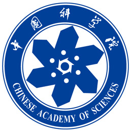

Verification & Reliability
Efficient RTL simulation, parallel fault simulation, automated testing, and highly reliable circuit design.
I work at the intersection of AI and electronic design automation, building efficient methods for RTL simulation, design verification, and highly reliable circuit design.
My research connects algorithms, learning, and hardware architecture to improve how we design and verify computing systems.
Efficient RTL simulation, parallel fault simulation, automated testing, and highly reliable circuit design.
Circuit representation learning, RTL timing prediction, open datasets, LLM-assisted design and verification, and hardware accelerator design for fully homomorphic encryption and cryptographic computing.
Selected papers, 2022–2026.
See Google Scholar for the full list.

Institute of Computing Technology, Chinese Academy of Sciences
Chinese Academy of Sciences

School of Electronics Engineering and Computer Science
China Computer Federation · Technical Committee on Integrated Circuit Design
ETPG · Corresponding author
DDP-fsim · Corresponding author
IEEE TCAD · IEEE TCAS-I · IEEE TVLSI
DATE · ITC · AAAI · ICSICT · ATS
CCF CHIP 2026
IEEE EMO 2026
“LLM for Processor Chip Design” Summer School, ICT, CAS · July 2025
State Key Laboratory of Processors
Institute of Computing Technology, Chinese Academy of Sciences
Beijing, China